NL: Decoración de Hogar
Sesión enfocada en la calidad del producto, y opciones varias de darle identidad a los rincones del hogar.

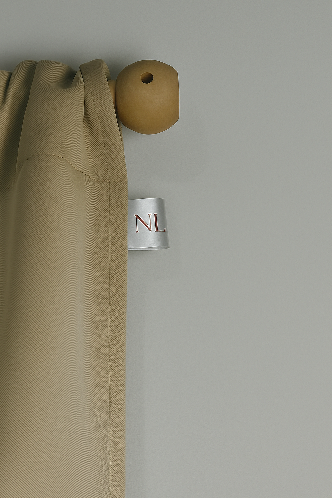
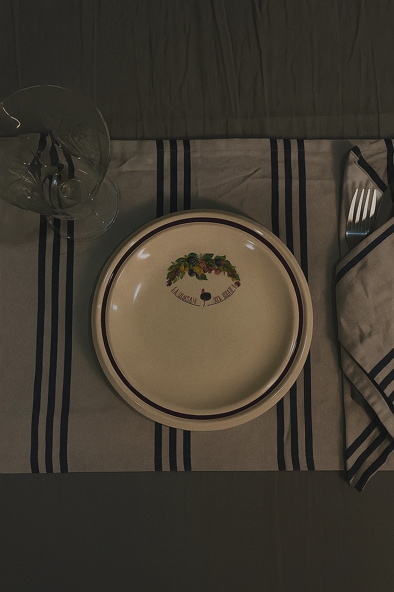
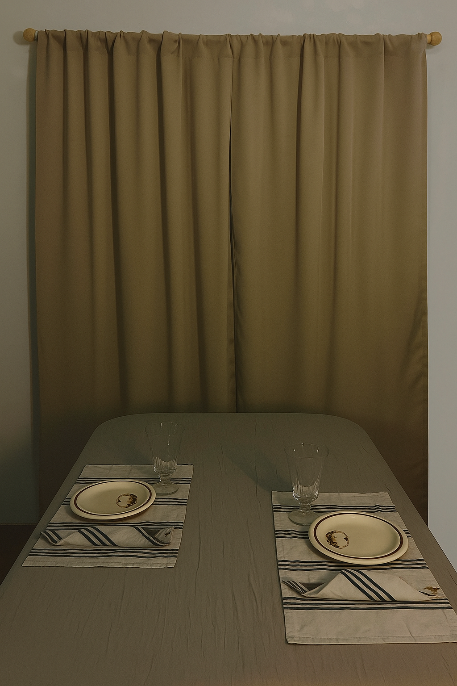
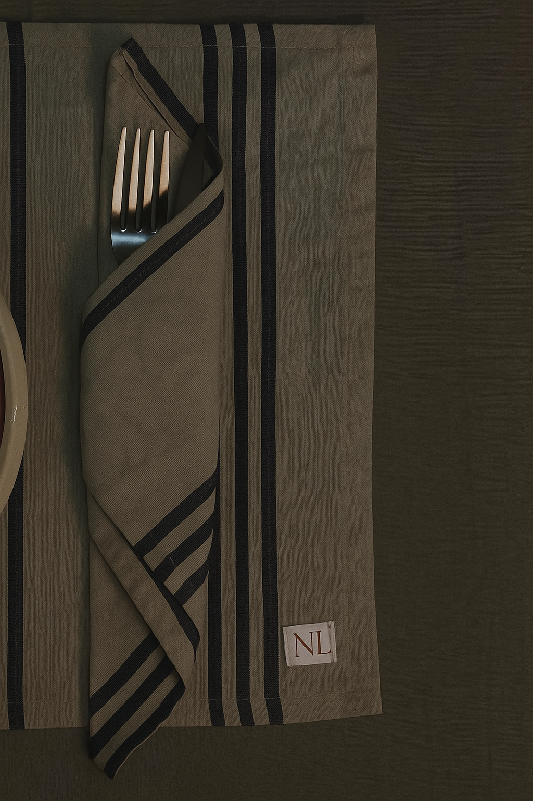
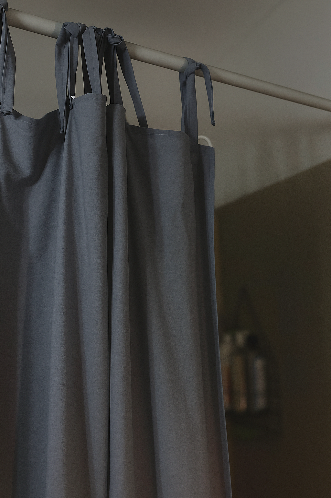
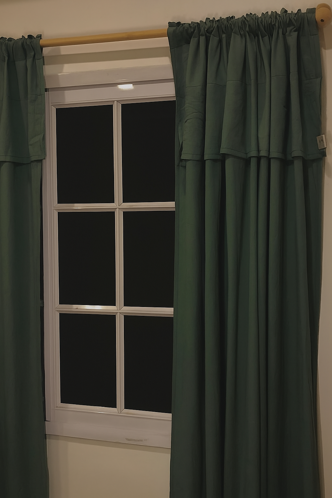
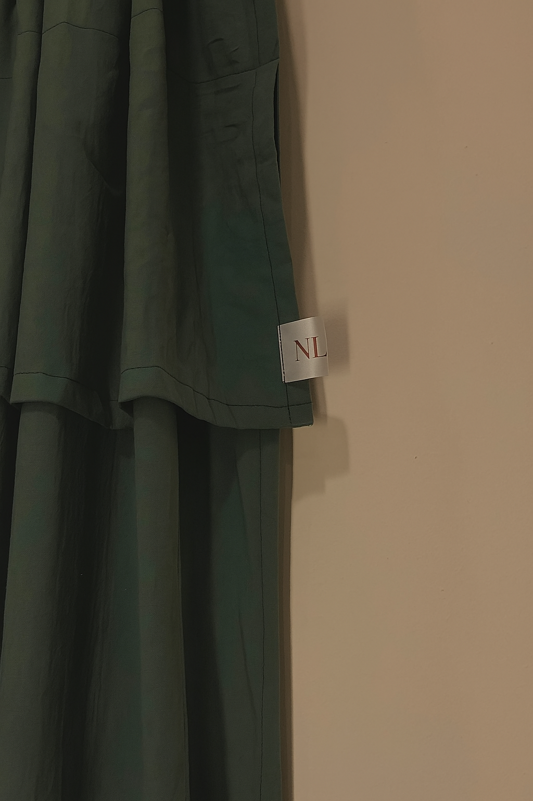
Colitos: Bienvenida & Habitar casa
Sesión enfocada en la practicidad de productos como Cambiador & Nidito.
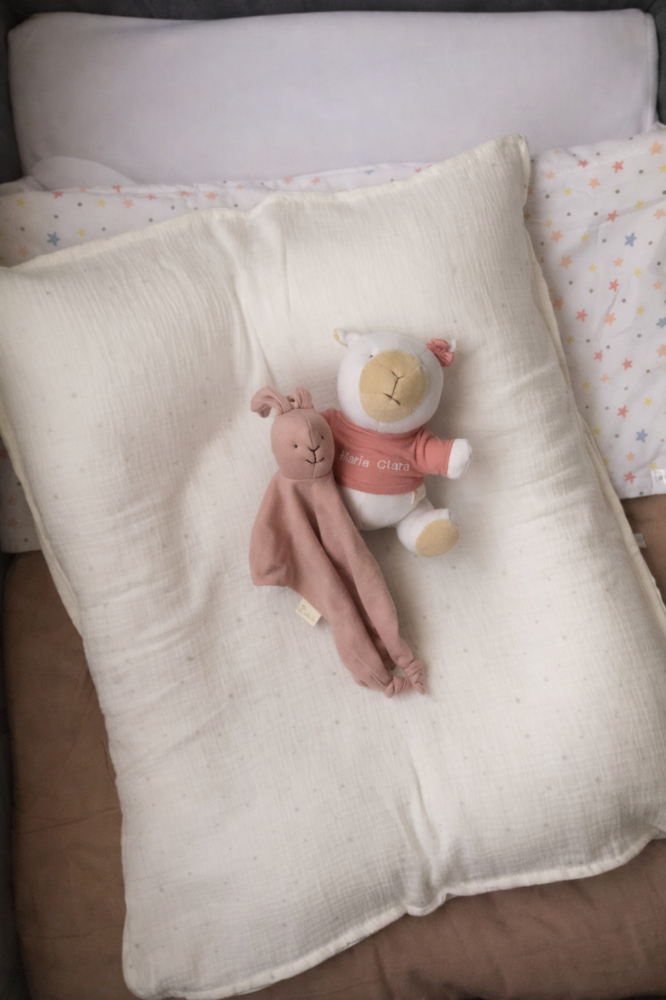
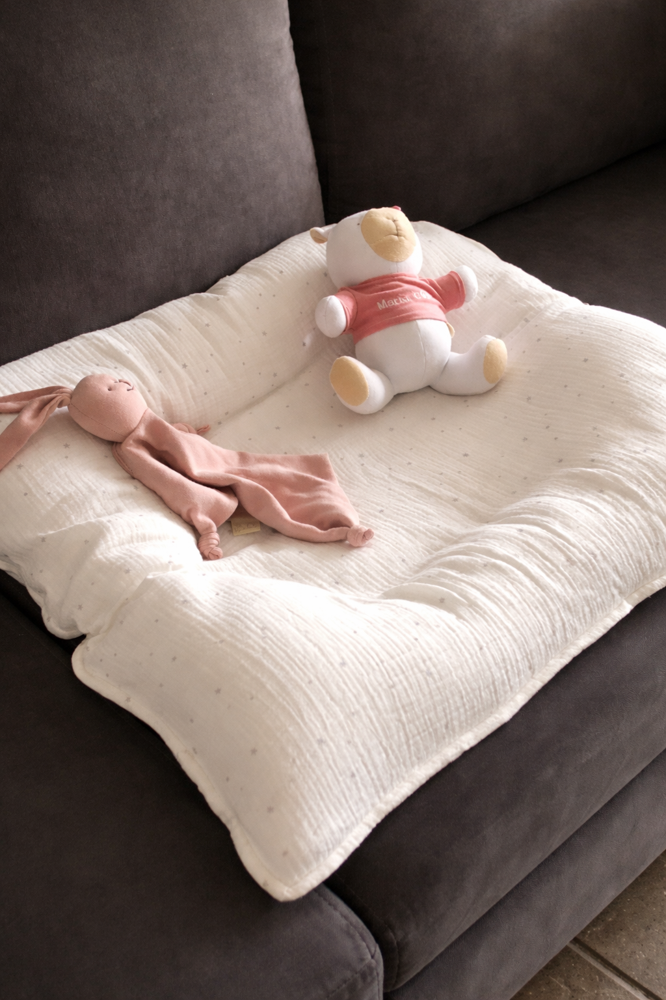

La iluminación natural en esta sesión fue clave para resaltar
las texturas, para darle delicadeza a los productos, y despertar
la pureza del contexto.
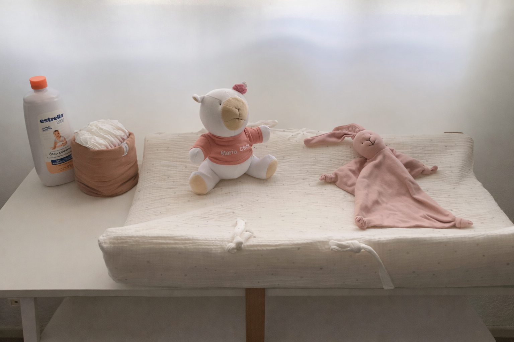
Lencería & Textura
Sesión enfocada en la textura de los conjuntos.
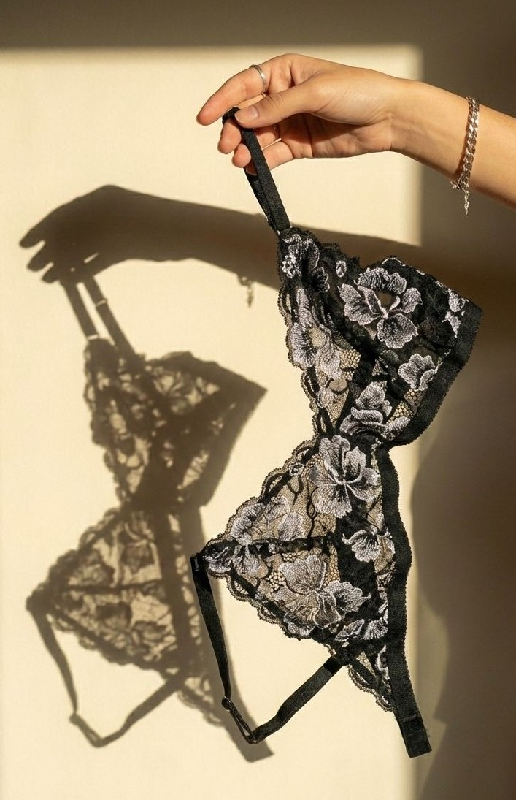
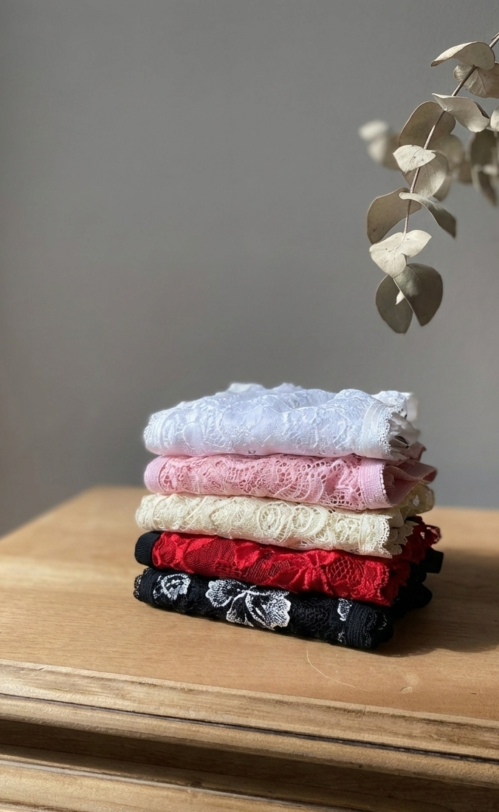

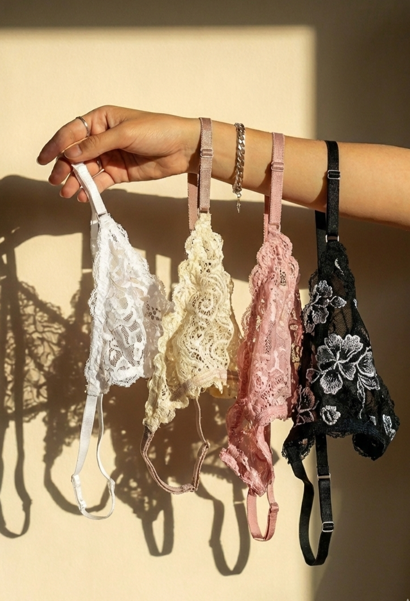
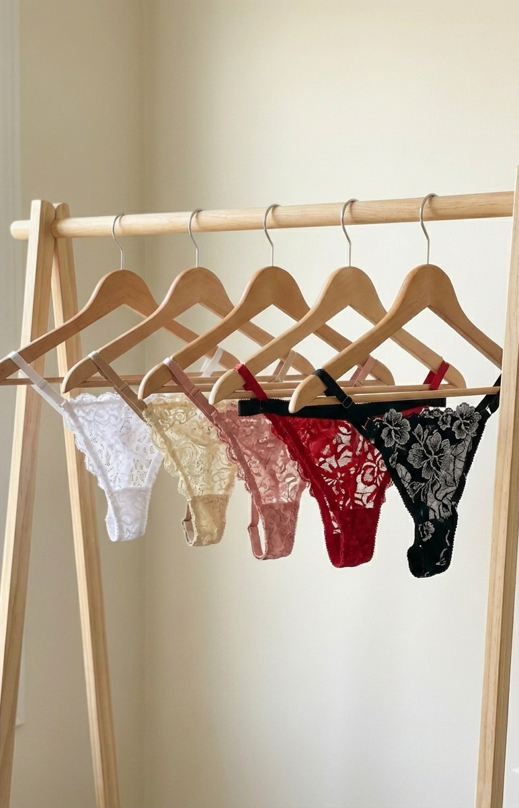
El espacio donde se tomaron las fotos
marcó la diferencia en el resultado. Permitió explotar al
máximo el lugar y sus recovecos, con el fin de mostrar
la calidad del producto de formas varias.
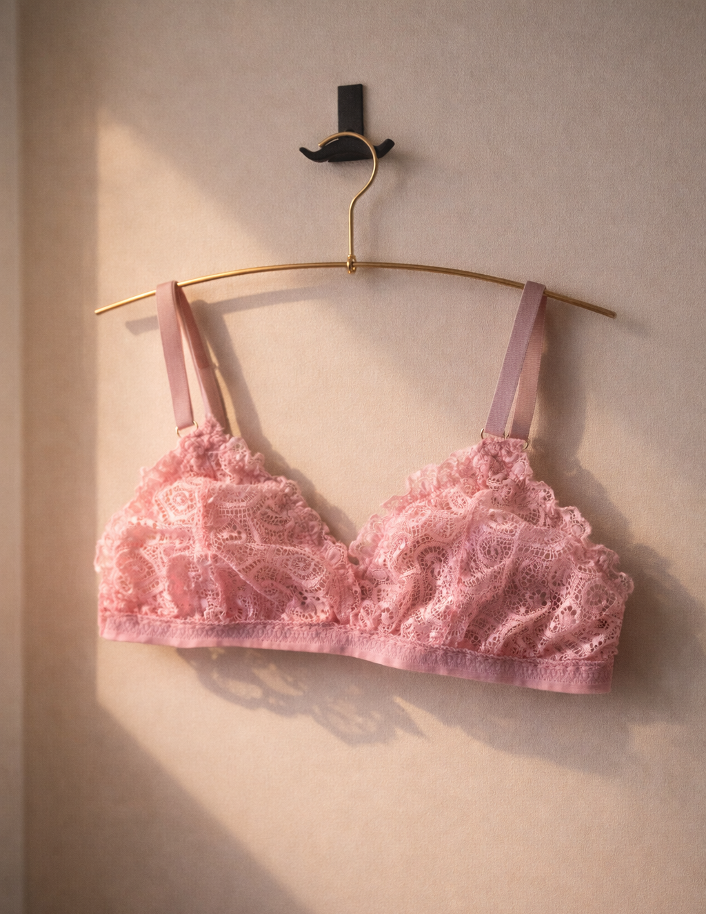
Skincare & Belleza
Sesión enfocada en transmitir experiencia de bienestar, resaltando suavidad de los textiles y delicadeza de la rutina de skincare diaria.